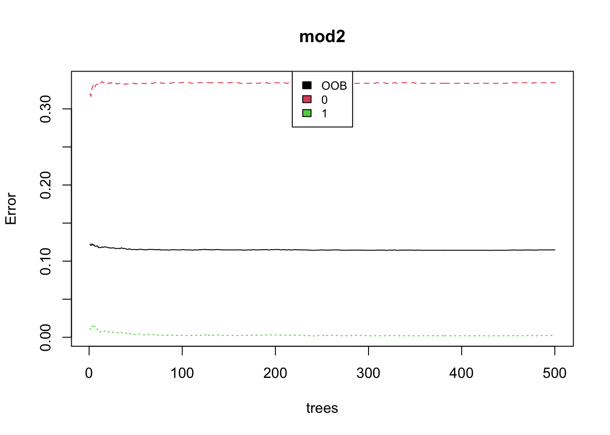

Chapter 5 Model 3: Random Forest
5.1 Random Forest: PU/DOLocationID vs pickup/dropoff_borough
In this model, I decided to try the original, raw PU/DOLocationID columns instead of the pickup/dropoff_borough columns I created and compare the performance of the two. PU/DOLocationID gives us the exact taxi zone from which passengers were picked up/dropped off (there are about 200 of these covered New York City), adding further granularity to the location information represented in the column, whereas pickup/dropoff_borough gives us the borough. The reason I originally chose to create pickup/dropoff_borough was that it gave us 5 easy to interpret categories; “Queens,” “Manhattan,” “Bronx” etc was much more understandable by a reader than taxi zones such as “192,” “4,” and “95” that give us no immediate information in where they are located geographically. Expanding to PU/DOLocationID will be more computationally heavy, since there are now 200 categories to deal with, but my hypothesis is that it will give the model a little more information to work with.
## [1] 0.8837209To understand our random forest results, we first need to understand OOB (out of bag) error. Each bagged tree uses about 2/3 of the observations, and the remaining 1/3 of observations is referred to as the out of bag observations. Since in this case we care about classification, we take the majority vote for each observation, in which each prediction is made using the 1/3 OOB observations. This is a valid estimate of the test error for the bagged model. The 11.77% number is a weighted average based on how many observations go through that node. Note: we can also confirm that it’s a good estimate for error because the OOB estimate (11.77) + mean prediction accuracy (88.37) roughly equals 1.
So far it’s also doing better than OneR and Decision Tree! The accuracy on the test data is 88.37%, which is considerably better than just guessing 1 for all the rows (which would yield about 67% accuracy).
Next, I’d like to do the same model, replacing DULocationID with dropoff_borough and PULocationID with pickup_borough to see if my hypothesis is correct.

## [1] 0.8879493The OOB error is 11.43% which is slightly better than the random forest using the location ID! The prediction accuracy on the test data is 88.79% which is also slightly better than when using the locationID. Looks like my hypothesis was incorrect- using just the borough as predictors worked just as well (in fact slightly better) than having the more granular location ID. Another possibility is that dropoff borough was not a very important predictor in the random forest model, so switching it out slightly didn’t make much of an impact on the model accuracy.
Looking at the plotted random forest model, we see that the error rate doesn’t change after 30 trees, indicating that 30 trees is probably enough for our purposes. In terms of error, our error for classifications of 1 is quite low, whereas the error for classifications of 1 is quite high. This may again be indicative of the relative frequencies of 0’s and 1’s (the data is roughly 35% 0’s and 65% 1’s), so the model may be blanket classifying rows as 1 leading to high 0 classification error.
Next, let’s take a look at the accuracy, sensitivity, and specificity.
## [1] "Overall accuracy:"## [1] 0.8879493## [1] "Test sensitivity and specificity:"## [1] 0.6727829## [1] 1Let’s also take a look at feature importance based on our random forest model.
Just as my other models confirmed, payment_type is by far the best predictor, whereas the other predictors are hovering around the 0.0 line. After looking at 3 models that confirm this, it seems that taxi drivers should really start encouraging their customers to pay with card as often as possible!
5.2 Shapley Value Analysis
I’d also like to look at the Shapley values. It looks at the average contribution of a feature value to the prediction in different coalitions. Shapley is a permutation method, looks at all combinations of features, which is costly in terms of computation. However, since I’ve decided not to use the 200+ categories for PU/DOLocationID (instead opting for the 5 category pickup/dropoff_borough), I think it’s an appropriate thing to analyze.
Let’s do 100 simulations to explain the 100th observation in the data!
## # A tibble: 1 × 7
## passenger_count VendorID RatecodeID dropoff_bor…¹ season high_fare paymen…²
## <dbl> <dbl> <dbl> <dbl> <dbl> <dbl> <dbl>
## 1 -3.48e-19 5.34e-18 0 -1.87e-17 -1.18e-17 -3.43e-19 1.64e-18
## # … with abbreviated variable names ¹dropoff_borough, ²payment_type## # A tibble: 7 × 2
## var shap_value
## <chr> <dbl>
## 1 passenger_count -3.48e-19
## 2 VendorID 5.34e-18
## 3 RatecodeID 0
## 4 dropoff_borough -1.87e-17
## 5 season -1.18e-17
## 6 high_fare -3.43e-19
## 7 payment_type 1.64e-18From our shapley values, we can tell that payment type contributed the most positive values in the prediction for the 100th observation, whereas dropoff_borough contributed the most negative values in the prediction. Let’s take a look at the 100th observation to see if the shapley values line up with what we’d expect!
## X.1 X VendorID tpep_pickup_datetime tpep_dropoff_datetime
## 2204 2225 18305441 1 09/07/2021 02:12:41 PM 09/07/2021 02:20:42 PM
## passenger_count trip_distance RatecodeID store_and_fwd_flag PULocationID
## 2204 1 1 1 N 236
## DOLocationID payment_type fare_amount extra mta_tax tip_amount
## 2204 237 1 7.5 2.5 0.5 2.15
## tolls_amount improvement_surcharge total_amount congestion_surcharge
## 2204 0 0.3 12.95 2.5
## tipped tip_percent tip high_fare pickup dropoff
## 2204 1 0.2866667 1 0 2021-09-07 14:12:41 2021-09-07 14:20:42
## duration season pickup_borough dropoff_borough
## 2204 8.016667 autumm Manhattan ManhattanWe see that the payment_type was 1, or credit card, which we’ve established is indicative of a much higher rate of tipping. We also see that the dropoff borough is Manhattan. This is surprising, because from our OneR analysis we’d expect tha Manhattan dropoff would more likely be a tip percentage of >15%. However, when we look at our feature importance plot from earlier, we found that actually, dropoff borough isn’t as important as it seems, and may not even be much more important than any of the other features. The passenger count is 1, vendorID is 1 (Creative Mobile Technologies), season is autumn, is not high_fare, and ratecodeID is 1 indicating standard rate. Overall, payment_type seems to contribute the most to the prediction which is in line with what we’d expect in our feature importance plot.